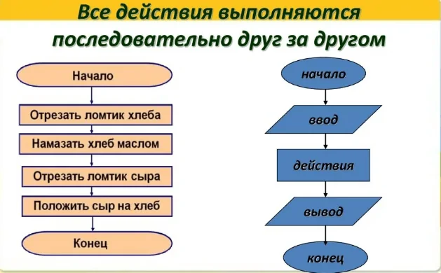
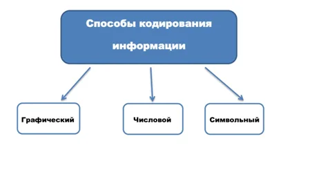
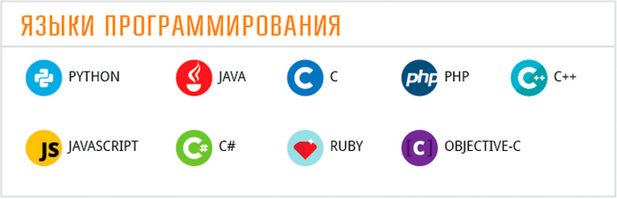

Алгоритмы
Алгоритм (лат. algorithmi - от имени математика Аль-Хорезми) - совокупность точно заданных правил решения некоторого класса задач или набор инструкций, описывающих порядок действий исполнителя для решения определённой задачи. Алгоритм лежит в основе программирования и работы компьютера. В основе работы компьютера вычислительные алгоритмы. Вычислительные алгоритмы, по сути, преобразуют некоторые начальные данные в выходные, реализуя вычисление некоторой функции.
В изображении справа виден пример простого алгоритма.

Кодирование информации
Кодирование информации - это трансформация информации из одной формы в другую, более удобную для ее передачи, обработки, хранения с помощью некоторого кода. Существуют разные системы кодирования информации - это комплекс правил и закономерностей, обозначения данных в виде определенного кода. Код - это система знаков, символов, которые необходимы для передачи данных, это закономерность отражения одного комплекта знаков в другом. Двоичный код - это вариант передачи, хранения, представления информации с применением 2 вариантов знаков - 0 и 1, который применяется в вычислительной технике. К основным видам кодирования данных относят: кодирование цвета, кодировка текстовой информации, кодировка числовых данных, кодировка графики, кодирование видеозаписи, кодирование звуковой информации.

Языки программирования
Языки программирования(ЯП) - формальный язык, предназначенный для записи компьютерных программ.
Язык программирования предназначен для написания компьютерных программ, которые представляют собой набор правил, позволяющих компьютеру выполнить тот или иной вычислительный процесс. По классификации существуют следующие ЯП:
1. По абстракции, т.е "близости" кода к машинному(двоичному),делятся на высокоуровневые(понятные человеку) и низкоуровневые(менее понятны человеку).
2. По реализации, т.е выполнении кода, делятся на компилируемые(код полностью компилируется в машинный, затем выполняется), интерпретируемые(код выполняется строка за строкой).
3. По типизации, т.е по типам переменных, делятся на сильные и слабые(выполнение арифметических операций между разными типами данных, запрещены и разрешены соответсвенно), статические и динамические(момент назначения типа переменной, сразу и во время выполнения кода соответсвенно).
На данный момент, к популярным ЯП относятся: Python, Java, C++, C, C#, JavaScript.
